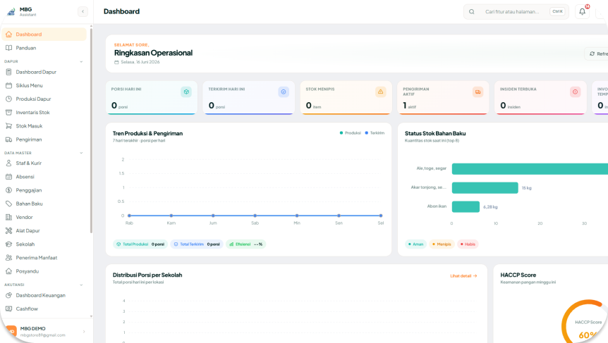

Monitoring MBG yang Transparan & Terukur Dalam Satu System
Mewujudkan program Makan Bergizi Gratis nasional yang tidak hanya berjalan, tetapi terpantau, terukur, dan berdampak nyata hingga ke setiap penerima manfaat.
Berlangganan SekarangTantangan Program Gizi
Yayasan dan dapur masih menghadapi sejumlah tantangan dalam menjalankan Program MBG, yang dirancang untuk menjamin asupan makanan sehat dan tepat waktu bagi siswa.

Perencanaan Belanja
Tanpa sistem yang jelas, kebutuhan bahan baku sulit diprediksi, berisiko menimbulkan kekurangan atau kelebihan stok.

Pencatatan Manual
Tanpa sistem yang jelas, kebutuhan bahan baku sulit diprediksi, berisiko menimbulkan kekurangan atau kelebihan stok.

Distribusi
Tanpa sistem yang jelas, kebutuhan bahan baku sulit diprediksi, berisiko menimbulkan kekurangan atau kelebihan stok.

Pemenuhan Gizi
Tanpa sistem yang jelas, kebutuhan bahan baku sulit diprediksi, berisiko menimbulkan kekurangan atau kelebihan stok.

Deteksi Lambat
Tanpa sistem yang jelas, Ketidaksesuaian porsi/sasaran sulit terdeteksi secara dini.
Tanpa sistem yang kuat, program besar akan sulit diukur keberhasilannya secara akurat.
Apa itu Bantu MBG?
Platform digital monitoring terpadu yang dirancang khusus untuk mengelola, menilai, dan mengevaluasi pelaksanaan Program Makan Bergizi Gratis secara nasional.

Monitoring Proses
Sistem pengawasan real-time untuk memastikan setiap tahapan operasional berjalan sesuai standar prosedur (SOP).
Perencanaan Menu & Siklus Menu
Menyusun variasi menu harian dengan lebih mudah. Jadwal otomatis menyesuaikan kebutuhan kandungan nutrisi sesuai standar untuk anak.


Perencanaan Belanja Bahan Baku
Menghindari kelebihan maupun kekurangan bahan baku dengan sistem perhitungan gramasi otomatis agar biaya lebih efisien dan terkontrol.
Laporan Digital & Monitoring Proses
Laporan operasional otomatis mempermudah verifikasi,
menghemat waktu, dan meningkatkan akurasi data.
Seluruh proses dapat dipantau secara real-time untuk
memastikan pelaksanaan tetap sesuai tujuan.

Platform Satu Pintu
Untuk Seluruh Ekosistem.

Yayasan SPPG
Kendali penuh yayasan dengan laporan dan rencana biaya akurat.

Dapur Mitra
Atur menu, bahan baku, belanja, hingga distribusi lewat laporan otomatis.

Pihak Sekolah
Pantau menu harian, pastikan distribusi tepat sasaran, dan evaluasi kualitas makanan.
Skor HACCP
Keamanan pangan minggu ini
Penilaian Berbasis Standar Keamanan Pangan
Hasil akhir berupa "Skor HACCP" untuk setiap fasilitas dapur atau wilayah, diukur berdasarkan sistem jaminan keamanan pangan yang bertujuan untuk mengidentifikasi, mengevaluasi, dan mengendalikan bahaya secara sistematis.
-
 Kualitas gizi makanan harian
Kualitas gizi makanan harian
-
Ketepatan waktu operasional distribusi
-
Kesesuaian menu dengan SOP dapur
-
Tingkat keterjangkauan titik wilayah